Every recipe shows its calories and protein per serving, worked out from the ingredients. A member who wants it sets daily targets and sees the week's plan measured against them, with a weekly budget for flexible meals. Training is planned as blocks that fit a chaotic day and a two-week work cycle, not fixed appointments. The full reasoning is in docs/plans/health/README.md.
11 screensLo-fi · monochromeMobile 375×812Tap any wireframe to zoom
Flow
Six PRs, each shippable on its own. H1 and H2 help this week; H6 needs an APK release.
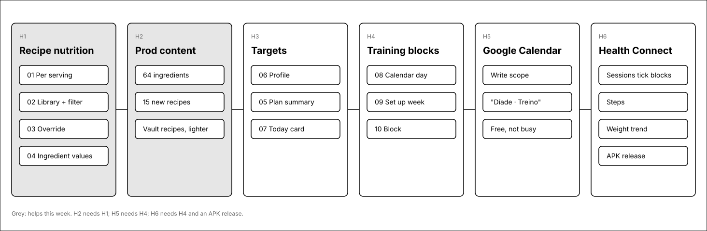
Starting targets
Mifflin-St Jeor for a sedentary 38-year-old man, 172 cm, 87 kg. Estimates, not medical advice; editable in the app.
What
Per day
Why
Calories
1,750 kcal
Maintenance is about 2,100. With walking added, 0.4 to 0.5 kg a week.
Protein
140 g
About 1.6 g per kg: keeps you full and keeps muscle while eating less.
Water
2.5 to 3 L
From drinks; more on training days.
Coffee
Up to 4 espressos
400 mg caffeine at most, the last before 15:00 to protect sleep.
Flexible meals
1,000 kcal a week
Two or three homemade flexible meals, or one meal out and one flexible.
1 · Recipe detail: per serving (H1)
The numbers come from the ingredients, so editing a recipe keeps them right.
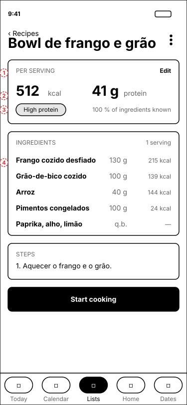
1A new card above the ingredients. Edit opens the override (3).
2Calories and protein per serving. Changing the servings in a plan never changes these.
3High protein when there are at least 8 g of protein per 100 kcal. Coverage says how much of the recipe's weight had data; "to taste" lines do not count against it.
4Each line shows its own kcal, so a heavy ingredient is easy to spot and swap.
Where the numbers come from: a built-in table per ingredient (INSA first, USDA second), matched through the same resolver the grocery list uses. A household value on the catalog wins. Recipe lines are not changed.
2 · Recipes library (H1)
The card line gains kcal and protein, and a filter finds the high-protein ones.
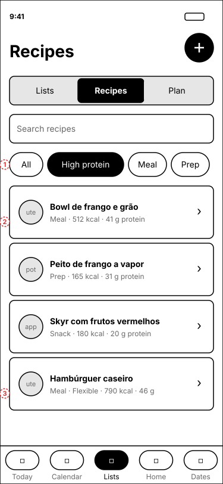
1High protein sits with the type chips and combines with them and with search.
2Type, kcal and protein per serving. The ingredient and serving counts move to the detail.
3A flexible meal says so. It draws from the weekly flex budget in the plan (5).
3 · Edit nutrition (H1)
For when a label or a recipe source knows better than the table.
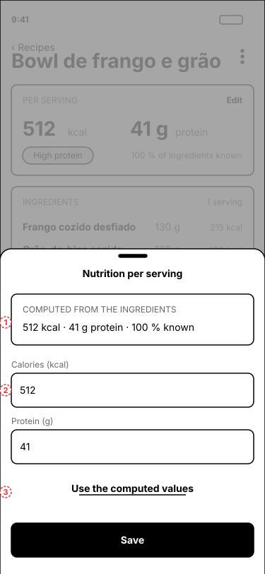
1What the ingredients add up to, always shown, so an override never hides it.
2Per-serving values. Saving stores them on the recipe; markdown import reads kcal: and protein: the same way.
3Back to the computed values.
4 · Ingredient values (H1)
On the existing Ingredients screen: one place to fix a value for every recipe.
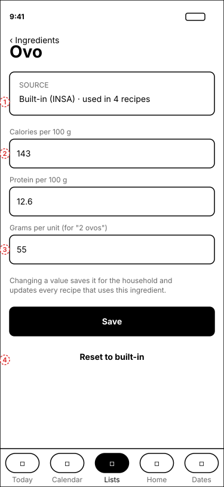
1Where the value comes from, and how many recipes use it.
2Per 100 g, the way labels and tables give them.
3Grams per unit, for lines like "2 ovos". Spoons convert by rule (15 ml and 5 ml).
4Drops the household value; the catalog row is kept only if it holds anything else.
5 · Plan against the targets (H3)
Only for a member with nutrition on. The plan is still a weekly pool, so "per day" is the week divided by seven.
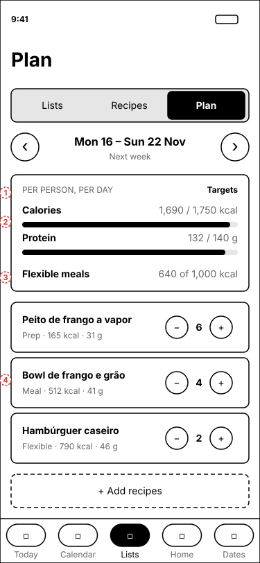
1Per person: the household's servings split between the members who eat.
2Calories and protein against the member's own targets.
3The flex budget: flexible meals planned this week, out of 1,000 kcal.
4Each recipe card shows its per-serving numbers next to the servings stepper.
6 · Profile → Nutrition (H3)
Per member and off by default, so the partner's app stays as it is.
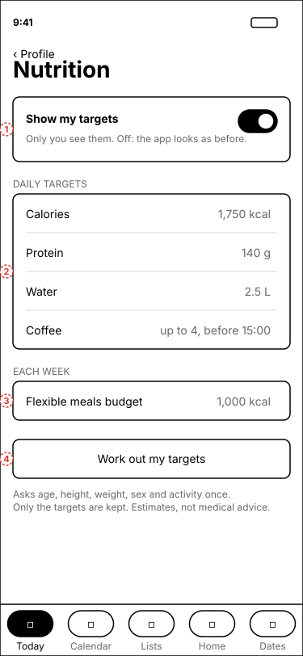
1The switch. Off hides the targets, the plan summary and the Today card; recipe kcal stays, as household information.
2Daily targets. Water and coffee are reminders, not logs.
3The weekly flex budget.
4Works the targets out from age, height, weight, sex and activity, then forgets the inputs.
7 · Today: your day (H3, H4, H6)
One card, only with nutrition on. Nothing to log: it reads the plan and the calendar.
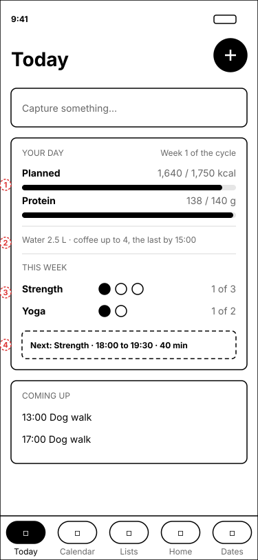
1Today's planned calories and protein against the targets.
2The water and coffee reminders.
3The week's training goals, strength and bodyweight. They count the week, not the day, so a skipped block does not turn anything red.
4The next block that can still count.
5Steps so far today, from Health Connect, when it is on (H6).
The default week
Fixed points first: the four dog walks (shared, either of you) and the work rhythm. Training goes round them.
Week 1 (implementation)
Week 2 (freezes, release)
Every weekday
07:00 walk · 08:00 to 09:15 focus · 09:15 standup and calls (walking pad 09:30 to 11:30) · 12:30 lunch, or 13:30 after the walk · 13:00 walk · 14:00 to 17:00 focus · 17:00 walk · 21:00 walk. Nothing planned after 19:00.
Strength (goal)
3 · Mon, Wed 17:30 · Fri 15:00 · Sat 10:00
2 · Mon 17:30 · Sat, Sun 10:00
Bodyweight and stretching (goal)
2 · Tue, Thu 12:00 · Sun 17:30
3 · Tue, Wed, Thu 12:00 · Sun 17:30
Walking pad
Weekday mornings
Weekday mornings, and Wed and Thu afternoons
Batch prep
Sun 10:00 to 12:00
Sun 15:00 to 17:00
8 · Calendar day with blocks (H4)
Reserved household blocks are solid; training blocks are dashed, because they are offers, not appointments.
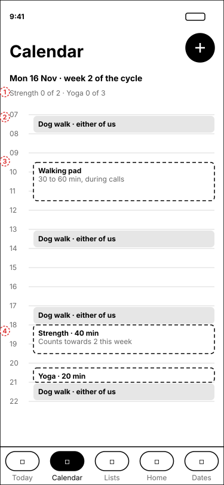
1Which week of the cycle it is, and the goals so far. A Wednesday of week 2: no strength block that day.
2Dog walks, from Google Calendar. Either of you takes them; one the partner takes frees the hour.
3The walking pad during morning calls.
4Midday, round the 13:00 walk: a 20-minute bodyweight and stretching block, then lunch before the walk, or at 13:30 after it when the morning runs over.
5Week 2 only: a second walking pad block on the QA afternoons.
6Nothing after 19:00. On strength days the block is 17:30 to 19:00, after the afternoon walk, started by 18:20.
9 · Set up my training week (H4)
Writes the default week as recurring personal events. After that they are ordinary events.
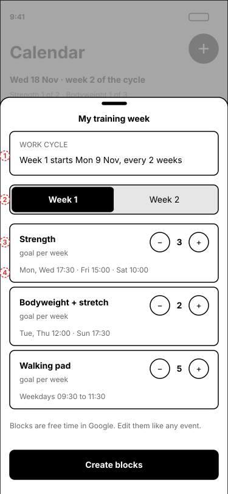
1The cycle anchor: a week-1 Monday. Blocks that differ between the weeks repeat every two weeks.
2Week 1 and week 2 each get their own goals and blocks.
3A goal per week and kind.
4The blocks offered for it: always more than the goal, so there is slack.
Why blocks: a fixed 18:00 appointment fails the first time a call runs late. A block that can be met on another day this week does not.
10 · A block (H4; H6 ticks it from the watch)
Tapping a block. Done is a tap, or a watch session inside the block (H6).
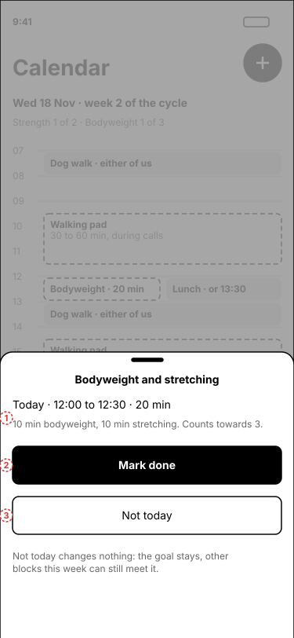
1When, how long the session is, and what it counts towards: 10 minutes of bodyweight work, then 10 of stretching.
2Mark done. A watch session of the same kind that overlaps the block does this by itself; unmarking it stays unmarked.
3Not today: no penalty, the goal stays and other blocks can meet it.
11 · Profile → Watch and scale (H6)
Health Connect, read on the phone. Both watches already write to it.
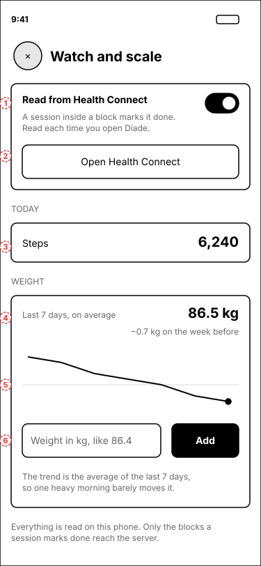
1One switch. Turning it on shows Health Connect's own permission screen: exercise sessions, steps, weight (read), and weight (write, for typed weigh-ins).
2Permissions are changed in Health Connect, not here.
3Steps since midnight. Health Connect merges the watch and the phone, so nothing counts twice.
4The weight trend: the average of the last 7 days, and how it moved against the 7 days before.
5Eight weeks of the trend, one point per weigh-in, the newest marked.
6Typing a weigh-in writes it to Health Connect, beside the smart scale's.
Why on the phone: Health Connect is on-device and covers the Pixel Watch (through Fitbit) and the Samsung watch (through Samsung Health) with one integration. The legacy Fitbit Web API was turned off on 2 November 2026, and its replacement is a server-side OAuth integration that is not needed for this.
Open questions
1Per-member servings in a plan, if one person eats more than the other.
2A real flexible flag on a recipe or a plan entry, instead of "(flexível)" in the name.
3Who takes which dog walk: events have no assignee today.